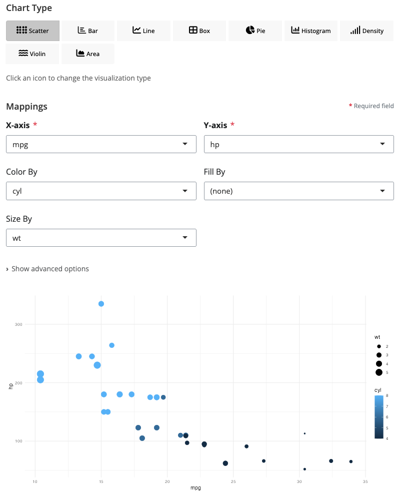

blockr.ggplot extends blockr.core with a single, powerful universal ggplot block that provides all major visualization types through an intuitive interface. Simply select your chart type and watch the interface dynamically adapt to show relevant controls. Build visualization pipelines by connecting data transformation blocks to this flexible plotting block in an interactive drag-and-drop interface.
Installation
Install the development version from GitHub:
# install.packages("devtools")
pak::pak("BristolMyersSquibb/blockr.ggplot")Quick Start
library(blockr.ggplot)
# Create and serve the universal ggplot block
blockr.core::serve(
new_ggplot_block(type = "point", x = "wt", y = "mpg", color = "cyl"),
data = list(data = mtcars)
)This launches an interactive web interface where you can: - Switch chart types instantly - Change from scatter to bar, line, boxplot, and more with a single dropdown - Dynamic controls - UI automatically adapts to show only relevant options for your selected chart type - Real-time preview - See your visualization update as you modify settings - Rich customization - Fine-tune aesthetics, themes, and styling options
Documentation
For a comprehensive showcase of all available blocks with screenshots and detailed explanations:
vignette("blockr-ggplot-showcase", package = "blockr.ggplot")The Universal ggplot Block
blockr.ggplot provides a single, powerful block that handles all your visualization needs. No need to learn multiple blocks - just one interface that adapts to your chosen chart type.

Key Features
- üîÑ One Block, Many Charts: Switch between 9+ chart types with a single dropdown
- üéØ Smart Interface: Controls dynamically show/hide based on your selected chart type
- üé® Rich Aesthetics: Map data to colors, shapes, sizes, fills, and more
- ⚡ Real-time Updates: See changes instantly as you adjust settings
- üé≠ Multiple Themes: Choose from minimal, classic, dark, light, and gray themes
Available Chart Types
Simply change the type parameter to create different visualizations:
# Scatter plot
blockr.core::serve(
new_ggplot_block(type = "point", x = "wt", y = "mpg", color = "cyl"),
data = list(data = mtcars)
)
# Bar chart
blockr.core::serve(
new_ggplot_block(type = "bar", x = "cyl", fill = "gear"),
data = list(data = mtcars)
)
# Line chart
blockr.core::serve(
new_ggplot_block(type = "line", x = "wt", y = "mpg", color = "cyl"),
data = list(data = mtcars)
)
# Box plot
blockr.core::serve(
new_ggplot_block(type = "boxplot", x = "cyl", y = "mpg"),
data = list(data = mtcars)
)
# And many more: violin, density, area, histogram, pie...Chart Types Gallery
All visualizations below are created with the same ggplot_block - just by changing the type parameter. Each screenshot shows the universal block configured for that specific chart type.
 Visualize the distribution of a single continuous variable
Visualize the distribution of a single continuous variable Compare values across categories with optional grouping and stacking
Compare values across categories with optional grouping and stacking Show distribution statistics across different groups
Show distribution statistics across different groups Combine box plot statistics with density distribution shapes
Combine box plot statistics with density distribution shapes Emphasize cumulative totals and magnitude of change
Emphasize cumulative totals and magnitude of change Show parts of a whole (set
Show parts of a whole (set Advanced Composition Blocks
Beyond the universal ggplot block, blockr.ggplot provides specialized blocks for advanced plot composition and styling:
Facet Block - Small Multiples

Split your visualization into multiple panels to compare patterns across categories. The facet block supports both facet_wrap() (flexible grid layout) and facet_grid() (rows × columns matrix).
# Example: Split scatter plot by cylinder count
board <- new_board(
blocks = c(
data = new_dataset_block("mtcars", package = "datasets"),
scatter = new_ggplot_block(
type = "point",
x = "wt",
y = "mpg",
color = "cyl"
),
facet = new_facet_block(
facet_type = "wrap",
facets = "cyl",
ncol = "2",
scales = "free_y" # Independent Y-axis per panel
)
),
links = c(
new_link("data", "scatter", "data"),
new_link("scatter", "facet", "data")
)
)
blockr.core::serve(board)Key Features: - üìä Two Modes: facet_wrap (auto-layout) or facet_grid (explicit rows/columns) - üìê Visual Preview: See facet layout before rendering - üéØ Flexible Scales: Free, fixed, or partially free axes - üè∑Ô∏è Custom Labels: Multiple labeller functions for panel titles
Grid Block - Multi-Plot Dashboards

Combine multiple independent plots into a unified dashboard using the powerful patchwork package. Plots are automatically aligned and arranged for publication-quality output.
# Example: Combine three different chart types
board <- new_board(
blocks = c(
data = new_dataset_block("mtcars", package = "datasets"),
scatter = new_ggplot_block(type = "point", x = "wt", y = "mpg", color = "cyl"),
boxplot = new_ggplot_block(type = "boxplot", x = "cyl", y = "mpg", fill = "cyl"),
histogram = new_ggplot_block(type = "histogram", x = "mpg", bins = 15),
grid = new_grid_block()
),
links = c(
new_link("data", "scatter", "data"),
new_link("data", "boxplot", "data"),
new_link("data", "histogram", "data"),
new_link("scatter", "grid", "1"),
new_link("boxplot", "grid", "2"),
new_link("histogram", "grid", "3")
)
)
blockr.core::serve(board)Key Features: - üé® Automatic Layout: Intelligent plot arrangement using patchwork - üîó Any Number of Plots: Combine 2, 3, 4+ plots seamlessly - üìè Perfect Alignment: Axes, legends, and spacing automatically aligned - üìä Mixed Chart Types: Combine scatter, bar, line, box plots, and more
Theme Block - Professional Styling

Apply professional themes and fine-tune visual styling with 20+ pre-built themes from ggplot2, ggthemes, cowplot, and ggpubr packages.
# Example: Apply publication-ready theme
board <- new_board(
blocks = c(
data = new_dataset_block("mtcars", package = "datasets"),
scatter = new_ggplot_block(
type = "point",
x = "wt",
y = "mpg",
color = "cyl"
),
theme = new_theme_block(
base_theme = "minimal" # Choose from 20+ themes
)
),
links = c(
new_link("data", "scatter", "data"),
new_link("scatter", "theme", "data")
)
)
blockr.core::serve(board)Available Themes: - üìà ggplot2 Built-ins: minimal, classic, gray, bw, dark, light, void, test - üéØ ggthemes: Economist, FiveThirtyEight, Tufte, WSJ, Excel, and more - üì∞ cowplot: Publication-ready themes with clean backgrounds - üî¨ ggpubr: Scientific publication themes
Customization Options: - üé® Colors (background, panel, grid, text) - üìù Typography (font size, family) - üî≤ Grid lines and panel borders - üìç Legend position and styling
Example: Interactive Pipeline with DAG Board
The universal ggplot block integrates seamlessly with blockr’s pipeline system:
library(blockr.core)
library(blockr.ggplot)
library(blockr.ui)
# Create a visualization pipeline with the universal ggplot block
board <- blockr.ui::new_dag_board(
blocks = c(
data_block = new_dataset_block("iris", package = "datasets"),
chart = new_ggplot_block(
type = "point", # Start with scatter plot
x = "Sepal.Length",
y = "Petal.Length",
color = "Species"
)
),
links = c(
chart_link = new_link("data_block", "chart", "data")
)
)
blockr.core::serve(board)This creates an interactive dashboard where you can: - Switch visualizations on-the-fly: Change chart type without breaking the pipeline - Modify data sources: Swap datasets or add transformation blocks - Build complex workflows: Chain multiple data operations before visualization
More Examples
Exploring Different Chart Types with Same Data
# Try different visualizations of the same dataset
library(blockr.ggplot)
# Distribution of a single variable
blockr.core::serve(
new_ggplot_block(type = "histogram", x = "mpg", bins = 20),
data = list(data = mtcars)
)
# Relationship between variables
blockr.core::serve(
new_ggplot_block(type = "point", x = "hp", y = "mpg", color = "cyl", size = "wt"),
data = list(data = mtcars)
)
# Group comparisons
blockr.core::serve(
new_ggplot_block(type = "violin", x = "cyl", y = "mpg", fill = "cyl"),
data = list(data = mtcars)
)
# Proportions
blockr.core::serve(
new_ggplot_block(type = "pie", x = "cyl", donut = TRUE),
data = list(data = mtcars)
)Contributing
Want to contribute to blockr.ggplot? See the Developer Documentation to get started.
The developer docs include: - Complete guide to creating blocks - blockr.ggplot architecture and patterns - Step-by-step examples and templates - Testing and validation guidelines